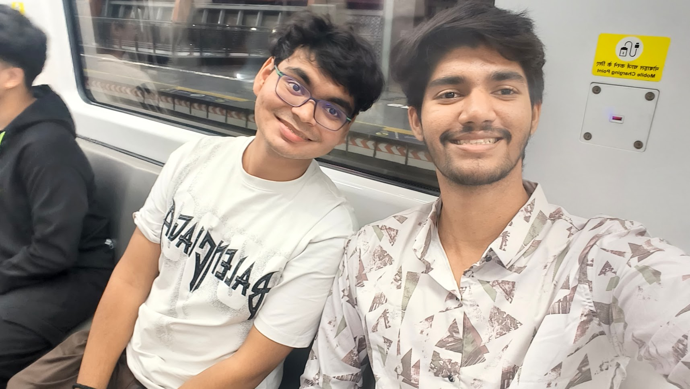

Exploring continual learning in reinforcement learning for robotic control by teaching agents to remember while they learn.
// What is this?
Bridging the gap between robotic control and lifelong learning
Moving beyond traditional physics-based control systems to Reinforcement Learning, where algorithms discover optimal policies through exploration and interaction with the environment.
Addressing catastrophic forgetting, which is the tendency of agents to lose previous knowledge when learning new tasks. Our goal is to build agents that remember everything they've learned.
Using model-based approaches with Model Predictive Control (MPC) and Cross-Entropy Method (CEM) to learn environment physics and plan optimal action sequences.
Implementing Proximal Policy Optimization as our model-free baseline, training on sequential tasks to demonstrate catastrophic forgetting before comparing with our approach.
Using the Continual-Bench environment with MuJoCo physics to rigorously evaluate retention across sequential tasks and measure how well agents preserve old skills.
Demonstrate that shallow world models with MPC achieve significantly better task retention than PPO when trained sequentially on multiple robotic control tasks.
// Learning Material
All the resources covered till now
// Insights
Weekly deep dives into RL concepts written by the team
// Week by Week
9 weeks of progressive learning and implementation (Week 0–8)
Getting up to speed with Python, NumPy, and fundamental ML before diving into RL.
Understanding MDPs, exploration strategies, and tabular methods.
Introducing model-free deep RL with function approximation.
Policy gradient methods and first simulation results.
The core problem: catastrophic forgetting in sequential task learning.
Shifting from model-free to model-based RL approaches.
Planning and control with learned dynamics models.
The main event: comparing retention across approaches.
Hyperparameter experiments and final report.
// The People
Brain & Cognitive Science Club, IIT Kanpur
Mentor
visheshk24@iitk.ac.in
Mentor
aditikm24@iitk.ac.in
Mentor
aayushk24@iitk.ac.in

Mentor
kushagrac24@iitk.ac.in
// Findings
Experimental results and final analysis
Results, analysis, and the final report will be published here after the project concludes in Week 8.